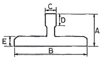
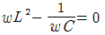
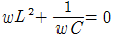
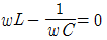
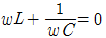

승강기기능사 (2016-04-02 기출문제)
1과목: 승강기개론
1. 엘리베이터용 트랙션식 권상기의 특징이 아닌 것은?
- 소요동력이 작다.
- 균형추가 필요 없다.
- 행정거리에 제한이 없다.
- 권과를 일으키지 않는다.
(정답률: 64%)

2. 스텝 폭 0.8m, 공칭속도 0.75 m/s 인 에스컬레이터로 수송할 수 있는 최대 인원의 수는 시간 당 몇 명인가?
- 3600
- 4800
- 6000
- 6600
(정답률: 65%)
3. 카가 최상층 및 최하층을 지나쳐 주행하는 것을 방지하는 것은?
- 균형추
- 정지 스위치
- 인터록 장치
- 리미트 스위치
(정답률: 86%)
4. 비상용 엘리베이터의 정전시 예비전원의 기능에 대한 설명으로 옳은 것은?
- 30초 이내에 엘리베이터 운행에 필요한 전력용량을 자동적으로 발생하여 1시간 이상 작동하여야 한다.
- 40초 이내에 엘리베이터 운행에 필요한 전력용량을 자동적으로 발생하여 1시간 이상 작동하여야 한다.
- 60초 이내에 엘리베이터 운행에 필요한 전력용량을 자동적으로 발생하여 2시간 이상 작동하여야 한다.
- 90초 이내에 엘리베이터 운행에 필요한 전력용량을 자동적으로 발생하여 2시간 이상 작동하여야 한다.
(정답률: 82%)
5. 주차구획이 3층 이상으로 배치되어 있고 출 입구가 있는 층의 모든 주차구획을 주차장치 출입구로 사용할 수 있는 구조로서 그 주차 구획을 아래·위 또는 수평으로 이동하여 자동차를 주차하도록 설계한 주차장치는?
- 수평순환식
- 다층순환식
- 다단식 주차장치
- 승강기 슬라이드식
(정답률: 60%)
6. 도어 인터록에 관한 설명으로 옳은 것은?
- 도어 닫힘 시 도어 록이 걸린 후, 도어 스위치가 들어가야 한다.
- 카가 정지하지 않는 층은 도어 록이 없어도 된다.
- 도어 록은 비상시 열기 쉽도록 일반공구로 사용 가능해야 한다.
- 도어 개방 시 도어 록이 열리고, 도어 스위치가 끊어지는 구조이어야 한다.
(정답률: 65%)
7. 승객이나 운전자의 마음을 편하게 해 주는 장치는?
- 통신장치
- 관제운전장치
- 구출운전장치
- B.G.M(Back Ground Music)장치
(정답률: 91%)
8. 조속기로프의 공칭 직경은 몇 mm 이상이어 야 하는가?
- 6
- 8
- 10
- 12
(정답률: 58%)
9. 카 문턱과 승강장문 문턱 사이의 수평거리는 몇 mm 이하이어야 하는가?
- 12
- 15
- 35
- 125
(정답률: 68%)
10. 기계실에서 이동을 위한 공간의 유효 높이 는 바닥에서부터 천장의 빔 하부까지 측정하여 몇 m 이상이어야 하는가?
- 1.2
- 1.8
- 2.0
- 2.5
(정답률: 52%)
11. 펌프의 출력에 대한 설명으로 옳은 것은?
- 압력과 토출량에 비례한다.
- 압력과 토출량에 반비례한다.
- 압력에 비례하고, 토출량에 반비례한다.
- 압력에 반비례하고, 토출량에 비례한다.
(정답률: 67%)
12. 엘리베이터를 3~8대 병설하여 운행관리하 며 1개의 승강장 부름에 대하여 1대의 카가 응답하고 교통수단의 변동에 대하여 변경되는 조작방식은?
- 군관리방식
- 단식 자동방식
- 군승합 전자동식
- 방향성 승합 전자동식
(정답률: 74%)
13. 교류 2단속도 제어에서 가장 많이 사용되는 속도비는?
- 2 : 1
- 4 : 1
- 6 : 1
- 8 : 1
(정답률: 64%)
14. 일반적으로 사용되고 있는 승강기의 레일 중 13K, 18K, 24K 레일 폭의 규격에 대한 사항으로 옳은 것은?

- 3종류 모두 같다.
- 3종류 모두 다르다.
- 13K와 18K는 같고 24K는 다르다.
- 18K와 24K는 같고 13K는 다르다.
(정답률: 67%)
15. 엘리베이터의 속도가 규정치 이상이 되었을 때 작동하여 동력을 차단하고 비상정지를 작동시키는 기계장치는?
- 구동기
- 조속기
- 완충기
- 도어스위치
(정답률: 79%)
2과목: 안전관리
16. 승객(공동주택)용 엘리베이터에 주로 사용되 는 도르래 홈의 종류는?
- U홈
- V홈
- 실홈
- 언더컷트홈
(정답률: 65%)
17. 가요성 호스 및 실린더와 체크벨브 또는 하 강밸브 사이의 가요성 호스 연결장치는 전 부하 압력의 몇 배의 압력을 손상 없이 견 뎌야 하는가?
- 2
- 3
- 4
- 5
(정답률: 52%)
18. 에스컬레이터와 무빙워크의 일반적인 경사 도는 각각 몇 도 이하 인가?
- 20°, 5°
- 30°, 8°
- 30°, 12°
- 45°, 20°
(정답률: 81%)
19. 파괴검사 방법이 아닌 것은?
- 인장 검사
- 굽힘 검사
- 육안 검사
- 경도 검사
(정답률: 85%)
20. 안전 작업모를 착용하는 주요 목적이 아닌 것은?
- 화상방지
- 감전의 방지
- 종업원의 표시
- 비산물로 인한 부상 방지
(정답률: 83%)
21. 전기재해의 직접적인 원인과 관련이 없는 것은?
- 회로 단락
- 충전부 노출
- 접속부 과열
- 접지판 매설
(정답률: 73%)
22. 사용전압 380V의 전동기를 사용하는 경우 접지공사는?
- 제1종 접지공사
- 제2종 접지공사
- 제3종 접지공사
- 특별 제3종 접지공사
(정답률: 68%)
23. 재해의 발생 과정에 영향을 미치는 것에 해당 되지 않는 것은?
- 개인의 성격적 결함
- 사회적 환경과 신체적 요소
- 불안전한 행동과 불안전한 상태
- 개인의 성별 · 직업 및 교육의 정도
(정답률: 71%)
24. 승강기시설 안전관리법의 목적은 무엇인가?
- 승강기 이용자의 보호
- 승강기 이용자의 편리
- 승강기 관리주체의 수익
- 승강기 관리주체의 편리
(정답률: 78%)
25. 재해 조사의 목적으로 가장 거리가 먼 것 은?
- 재해에 알맞은 시정책 강구
- 근로자의 복리후생을 위하여
- 동종재해 및 유사재해 재발방지
- 재해 구성요소를 조사, 분석, 검토하고 그 자료를 활용하기 위하여
(정답률: 84%)
26. 감전과 전기화상을 입을 위험이 있는 작업 에서 구비해야 하는 것은?(오류 신고가 접수된 문제입니다. 반드시 정답과 해설을 확인하시기 바랍니다.)
- 보호구
- 구명구
- 운동화
- 구급용구
(정답률: 82%)
27. 감전에 의한 위험대책 중 부적합한 것은?
- 일반인 이외에는 전기기계 및 기구에 접촉 금지
- 전선의 절연피복을 보호하기 위한 방호 조치가 있어야 함
- 이동전선의 상호 연결은 반드시 접속기 구를 사용할 것
- 배선의 연결부분 및 나선부분은 전기절 연용 접착테이프로 테이핑 하여야 함
(정답률: 72%)
28. “엘리베이터 사고 속보”란 사고 발생 후 몇 시간 이내인가?
- 7시간
- 9시간
- 18시간
- 24시간
(정답률: 74%)
29. 에스컬레이터의 스커트 가드판과 스탭 사이 에 인체의 일부나 옷, 신발 등이 끼었을 때 에스컬레이터를 정지시키는 안전장치는?
- 스텝체인 안전장치
- 구동체인 안전장치
- 핸드레일 안전장치
- 스커트 가드 안전장치
(정답률: 79%)
30. 유압장치의 보수 점검 및 수리 등을 할 때 사용되는 장치로서 이것을 닫으면 실린더의 기름이 파워유니트로 역류하는 것을 방지하는 장치는?
- 제지 밸브
- 스톱 밸브
- 안전 밸브
- 럽처 밸브
(정답률: 74%)
3과목: 승강기보수
31. 피트 정지 스위치의 설명으로 틀린 것은?
- 이 스위치가 작동하면 문이 반전하여 열리도록 하는 기능을 한다.
- 점검자나 검사자의 안전을 확보하기 위해서는 작업 중 카의 움직임을 방지하여야 한다.
- 수동으로 조작되고 스위치가 열리면 전동기 및 브레이크에 전원 공급이 차단되어야 한다.
- 보수 점검 및 검사를 위해 피트 내부로 “정지”위치로 두어야 한다.
(정답률: 56%)
32. 유압식 엘리베이터의 카 문턱에는 승강장 유효 출입구 전폭에 걸쳐 에이프런이 설치되어야한다. 수직면의 아랫부분은 수평면에 대해 몇 도 이상으로 아랫방향을 향하여 구부러져야 하는가?
- 15°
- 30°
- 45°
- 60°
(정답률: 47%)
33. 도어에 사람의 끼임을 방지하는 장치가 아닌 것은?
- 광전 장치
- 세이프티 슈
- 초음파 장치
- 도어 인터록
(정답률: 68%)
34. 승강기 정밀안전 검사기준에서 전기식 엘리베이터 주로프의 끝 부분은 몇 가닥 마다 로프소켓에 바빗트 채움을 하거나 체결식 로프소켓을 사용하여 고정하여야 하는가?
- 1가닥
- 2가닥
- 3가닥
- 5가닥
(정답률: 58%)
35. 정전으로 인하여 카가 층 중간에 정지될 경우 카를 안전하게 하강시키기 위하여 점검자가 주로 사용하는 밸브는?
- 체크 밸브
- 스톱 밸브
- 릴리프 밸브
- 하강용 유량제어 밸브
(정답률: 66%)
36. 유압펌프에 관한 설명 중 틀린 것은?
- 압력맥동이 커야 한다.
- 진동과 소음이 작아야 한다.
- 일반적으로 스크류 펌프가 사용된다.
- 펌프의 토출량이 크면 속도도 커진다.
(정답률: 59%)
37. 유압식 엘리베이터 자체점검 시 피트에서 하는 점검항목 장치가 아닌 것은?
- 체크밸브
- 램(플런저)
- 이동케이블 및 부착부
- 하부 파이널리미트 스위치
(정답률: 39%)
38. 전기식 엘리베이터 자체점검 시 기계실, 구동기 및 풀리 공간에서 하는 점검항목 장치가 아닌 것은?
- 조속기
- 권상기
- 고정 도르래
- 과부하 감지장치
(정답률: 42%)
39. 승강장에서 스텝 뒤쪽 끝부분을 황색 등으로 표시하여 설치되는 것은?
- 스텝체인
- 테크보드
- 데마케이션
- 스커트 가드
(정답률: 67%)
40. 전기식 엘리베이터 자체점검 시 제어 패널, 캐비닛 접촉기, 릴레이 제어 기판에서 “B로 하여야할 것”이 아닌 것은?
- 기판의 접촉이 불량한 것
- 발열, 진동 등이 현저한 것
- 접촉기, 릴레이-접촉기 등의 손모가 현저한 것
- 전기설비의 절연저항이 규정 값을 초과하는 것
(정답률: 39%)
41. 기계실에는 바닥 면에서 몇 lx 이상을 비출 수 있는 영구적으로 설치된 전기 조명이 있어야 하는가?
- 2
- 50
- 100
- 200
(정답률: 71%)
42. 콤에 대한 설명으로 옳은 것은?
- 홈에 맞물리는 각 승강장의 갈래진 부분
- 전기안전장치로 구성된 전기적인 안전시스템의 부분
- 에스컬레이터 또는 무빙워크를 둘러싸고 있는 외부 측 부분
- 스텝, 팔레트 또는 벨트와 연결되는 난간의 수직 부분
(정답률: 59%)
43. 로프의 미끄러짐 현상을 줄이는 방법으로 틀린 것은?
- 권부각을 크게 한다.
- 카 자중을 가볍게 한다.
- 가감속도를 완만하게 한다.
- 균형체인이나 균형로프를 설치한다.
(정답률: 60%)
44. 균형체인과 균형로프의 점검사항이 아닌 것은?
- 이상소음이 있는지를 점검
- 이완상태가 있는지를 점검
- 연결부위의 이상 마모가 있는지를 점검
- 양쪽 끝단은 카의 양측에 균등하게 연결되어 있는지를 점검
(정답률: 54%)
45. 고장 및 정전 시 카 내의 승객을 구출하기 위해 카 천장에 설치된 비상구출문에 대한 설명으로 틀린 것은?(관련 규정 개정전 문제로 여기서는 기존 정답인 3번을 누르면 정답 처리됩니다. 자세한 내용은 해설을 참고하세요.)
- 카 천장에 설치된 비상구출문은 카 내부 방향으로 열리지 않아야 한다.
- 카 내부에서는 열쇠를 사용하지 않으면 열 수 없는 구조이어야 한다.
- 비상구출구의 크기는 0.3m x 0.3m 이상이어야 한다.
- 카 천장에 설치된 비상구출문은 열쇠 등을 사용하지 않고 카 외부에서 간단한 조작으로 열 수 있어야 한다.
(정답률: 81%)
4과목: 기계,전기기초이론
46. 자동차용 엘리베이터에서 운전자가 항상 전진방향으로 차량을 입·출고할 수 있도록 해주는 방향 전환장치는?
- 턴 테이블
- 카 리프트
- 차량 감지기
- 출차 주의등
(정답률: 75%)
47. 한쌍의 기어를 맞물렸을 때 치면 사이에 생기는 틈새를 무엇이라 하는가?
- 백래시
- 이사이
- 이뿌리면
- 지름피치
(정답률: 62%)
48. 변형량과 원래 치수와의 비를 변형률이라 하는데 다음 중 변형률의 종류가 아닌 것은?
- 가로 변형률
- 세로 변형률
- 전단 변형률
- 전체 변형률
(정답률: 64%)
49. 직류 전동기에서 전기자 반작용의 원인이 되는 것은?
- 계자 전류
- 전기자 전류
- 와류손 전류
- 히스테리시스손의 전류
(정답률: 56%)
50. 공작물을 제작할 때 공차 범위라고 하는 것은?
- 영점과 최대허용치수와의 차이
- 영점과 최소허용치수와의 차이
- 오차가 전혀 없는 정확한 치수
- 최대허용치수와 최소허용치수와의 차이
(정답률: 66%)
51. 논리식 A(A+B)+B를 간단히 하면?
- 1
- A
- A+B
- A·B
(정답률: 65%)
52. 전압계의 측정범위를 7배로 하려 할 때 배율기의 저항은 전압계 내부저항의 몇 배로 하여야 하는가?
- 7
- 6
- 5
- 4
(정답률: 52%)
53. 논리회로에 사용되는 인버터(inverter)란?
- OR회로
- NOT회로
- AND회로
- X-OR회로
(정답률: 55%)
54. 물체에 하중을 작용시키면 물체 내부에 저항력이 생긴다. 이 때 생긴 단위면적에 대한 내부 저항력을 무엇이라 하는가?
- 보
- 하중
- 응력
- 안전율
(정답률: 75%)
55. 100V를 인가하여 전기량 30C을 이동시키는데 5초 걸렸다. 이때의 전력(kW)은?
- 0.3
- 0.6
- 1.5
- 3
(정답률: 53%)
56. 다음 중 측정계기의 눈금이 균일하고, 구동토크가 커서 감도가 좋으며 외부의 영향을 적게 받아 가장 많이 쓰이는 아날로그 계기 눈금의 구동방식은?
- 충전된 물체 사이에 작용하는 힘
- 두 전류에 의한 자기장 사이의 힘
- 자기장내에 있는 철편에 작용하는 힘
- 영구자석과 전류에 의한 자기장 사이의 힘
(정답률: 50%)
57. RLC직렬회로에서 최대전류가 흐르게 되는 조건은?




(정답률: 59%)
58. 직류발전기의 기본 구성요소에 속하지 않는 것은?
- 계자
- 보극
- 전기자
- 정류자
(정답률: 76%)
59. 3상 유도전동기를 역회전 동작시키고자할 때의 대책으로 옳은 것은?
- 퓨즈를 조사한다.
- 전동기를 교체한다.
- 3선을 모두 바꾸어 결선한다.
- 3선의 결선 중 임의의 2선을 바꾸어 결선한다.
(정답률: 79%)
60. 웜(Worm)기어의 특징이 아닌 것은?
- 효율이 좋다.
- 부하용량이 크다.
- 소음과 진동이 적다.
- 큰 감속비를 얻을 수 있다.
(정답률: 48%)